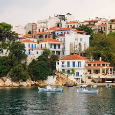

Дата народження: 23.01.2006 Місце народження: м.Київ
Освіта: Ліцей №8 м. Бровари; НТУУ "КПІ", м.Київ
Лептокарія — місто в регіональній одиниці Пієрія, Центральна Македонія, Греція, колишній центр муніципалітету Східний Олімпос, який є частиною муніципалітету Діон-Олімпос. Відстань від Катеріні становить 26 км, а населення села станом на 2021 рік становило 3612 жителів.
